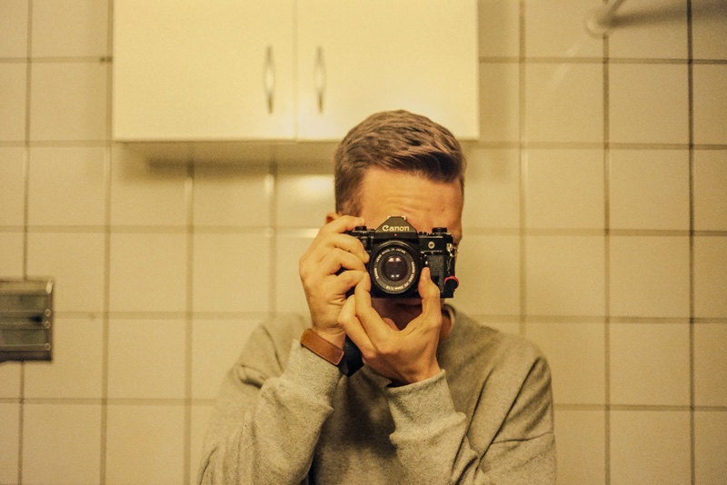

Soy Mauro Gianzone, fotógrafo radicado en Buenos Aires, Argentina.
Retrato y documento lo que veo y lo que siento. Me atraen los colores, la forma en que la luz toca lo cotidiano y los contrastes que surgen en esa mezcla entre lo simple y lo profundo.
Disfruto trabajar tanto con fotografía digital como analógica, explorando en cada formato distintas maneras de mirar y sentir.
